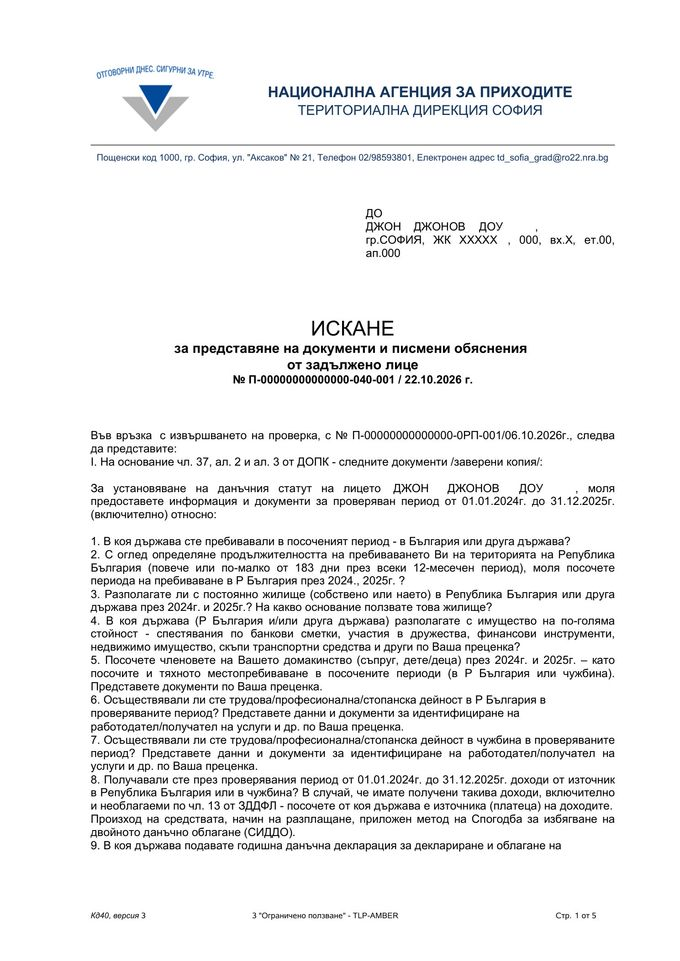
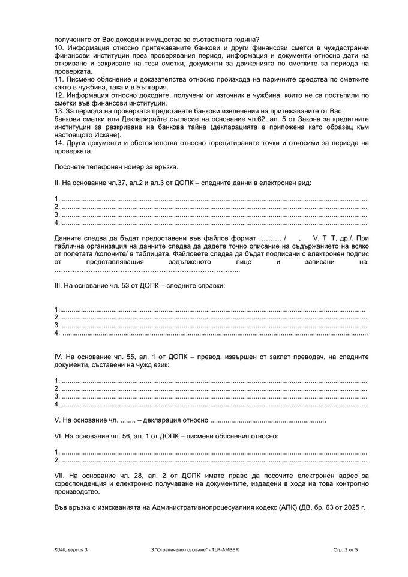
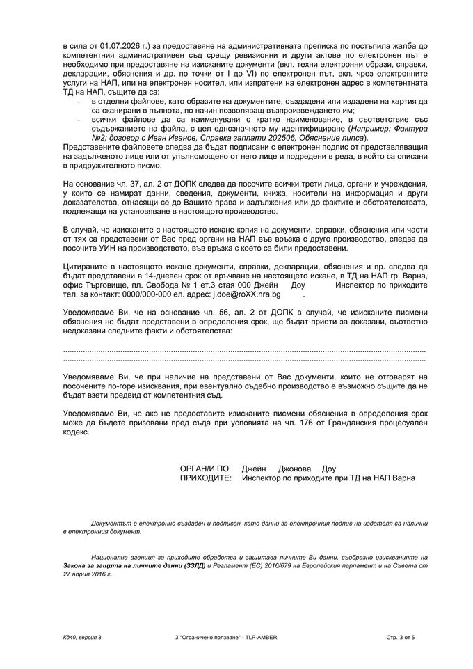

Данъци
Проверка от НАП за местно лице, чужди сметки и криптоборси

Съдържание
Писмо от Националната агенция за приходите (НАП) с десетки въпроси за това къде живеете, какви сметки имате в чужбина и откъде са парите ви, обикновено предизвиква притеснение. В действителност това е стандартна процедура, която през последните години се задейства за все повече хора, защото НАП получава все повече данни от чужбина и ги сверява с подадените декларации.
По-долу разглеждаме реално искане от октомври 2026 г. (личните данни са заличени): какви са правата ви по закон, каква е разликата между проверка и ревизия, как се обжалват актовете на НАП и какво реално „вижда“ данъчната администрация за сметките ви в Revolut, Wise, при брокерите и в централизираните криптоборси според действащото към октомври 2026 г. законодателство.
1. Какво точно иска НАП: разбор на писмото
Документът е Искане за представяне на документи и писмени обяснения от задължено лице (ИПДПОЗЛ), образец Кд40, версия 3. Издадено е на основание чл. 37, ал. 2 и 3 от Данъчно-осигурителния процесуален кодекс (ДОПК) и съдържа предупреждението по чл. 56 ДОПК: ако не дадете писмени обяснения в срок, органът може да приеме съответните факти за доказани, съответно недоказани, а вие може да бъдете призовани пред съда по чл. 176 ГПК.
Най-важното, което се вижда от самото писмо:
- Това е проверка, а не ревизия. Искането е издадено „във връзка с извършването на проверка“ с № П-…-0РП-001/06.10.2026 г. Ревизия се образува само със заповед за възлагане (чл. 112 ДОПК), а такава няма. В номерата „0РП“ на практика обозначава проверката, а „040“ съответства на образеца Кд40 на искането.
- Проверяван период: от 01.01.2024 г. до 31.12.2025 г. включително.
- Цел на проверката: НАП иска да установи дали за 2024 и 2025 г. лицето е местно физическо лице за данъчни цели в България (чл. 4 от Закона за данъците върху доходите на физическите лица – ЗДДФЛ) и дали има недекларирани доходи от България или от чужбина (т. 8–12 от искането).
- Защо писмото е на бланка на ТД София, а инспекторът е от ТД Варна, офис Търговище? Това не е грешка. Компетентна по общото правило е териториалната дирекция по постоянния адрес (чл. 8, ал. 1, т. 1 ДОПК), в случая София. Когато обаче проверката е възложена от изпълнителния директор на НАП или упълномощено от него лице, правилата за териториална компетентност по чл. 8 не се прилагат (чл. 110, ал. 4, изр. 2 ДОПК). На практика НАП разпределя преписки между офисите в цялата страна. Отговорът се подава до посочения в писмото инспектор – най-удобно по електронен път през портала на НАП.
- Срок за отговор: 14 дни от редовното връчване (подписване на разписката на стр. 5 или електронно връчване през портала на НАП). Срокът се брои от деня, следващ връчването, и изтича в края на последния ден (чл. 22, ал. 6 ДОПК). Ако последният ден е неприсъствен, срокът изтича в следващия присъствен ден (чл. 22, ал. 7). При лично подаване в офиса срокът изтича с края на работното време, а по електронен път – в 24:00 ч. (чл. 22, ал. 8). Органът не може да определи срок, по-кратък от 7 дни (чл. 22, ал. 1).
- Изисквания към електронните файлове. Писмото цитира изменението на Административнопроцесуалния кодекс (АПК, ДВ, бр. 63 от 2025 г., в сила от 01.07.2026 г.), с което административната преписка се изпраща на съда по електронен път. Затова при електронно подаване всеки документ трябва да е в отделен файл, сканиран изцяло, с ясно име (напр. „Извлечение_Revolut_2024.pdf“, „Обяснение_доходи.pdf“), подписан с електронен подпис и подреден по реда в придружителното писмо. Самото искане предупреждава, че документи, които не отговарят на тези изисквания, може да не бъдат взети предвид от съда при евентуално дело.
- Още две задължения от писмото, които често се пропускат: да посочите всички трети лица и институции, при които има документи, относими към проверката (чл. 37, ал. 2 ДОПК), и ако вече сте представяли същите документи в друго производство пред НАП, да посочите неговия УИН.



Цялото искане със заличени лични данни (PDF, 5 стр.) (отваря се в нов раздел)
2. Проверка или ревизия: каква е разликата
Данъчният контрол се осъществява чрез ревизии и проверки (чл. 110, ал. 1 ДОПК). На прост език: проверката е предварителното проучване, а ревизията е производството, с което се начисляват данъци.
| Характеристика | Проверка | Ревизия |
|---|---|---|
| Основна цел | Установяване на факти и обстоятелства, напр. дали лицето е местно и откъде са парите по сметките (чл. 110, ал. 3 ДОПК). | Установяване на задължения за данъци и задължителни осигурителни вноски (чл. 110, ал. 2 ДОПК). |
| Може ли да ви начислят данък? | Не. С проверка не се установяват задължения за данъци и осигурителни вноски (чл. 110, ал. 3, изр. 3 ДОПК). | Да. Завършва с акт, по който дължите реални суми (главница и лихви) и който подлежи на принудително изпълнение. |
| Как започва? | Без изрично писмено възлагане (чл. 110, ал. 4 ДОПК). В практиката – с вътрешна резолюция, която не ви се връчва; обикновено разбирате за проверката от първото искане. | Със заповед за възлагане на ревизия (ЗВР) по чл. 112 ДОПК, която ви се връчва. |
| Срок | До 6 месеца от първото процесуално действие (напр. връчено искане по чл. 37, ал. 3), с възможност за удължаване с още до 6 месеца, освен ако в закон е предвидено друго (чл. 110, ал. 5 ДОПК). | До 3 месеца от връчването на ЗВР и удължаване с до 2 месеца (чл. 114, ал. 1 и 2 ДОПК). При особена фактическа сложност – общо до 3 години (чл. 114, ал. 4). |
| С какво завършва? | С протокол (чл. 110, ал. 4 и чл. 50 ДОПК), който ви се предоставя в 7-дневен срок (чл. 110, ал. 5). | С ревизионен доклад (чл. 117 ДОПК), а след това с ревизионен акт (чл. 118–120 ДОПК). |
📌 Каква е връзката между двете?
Ако по време на проверката дадете убедителни обяснения и документи, случаят приключва с протокол без последствия. Ако обаче проверката покаже данни за недеклариран доход (или не отговорите), следващата стъпка обикновено е възлагане на ревизия, с която вече се начисляват данъци.
3. Може ли да се обжалва протоколът от проверката?
Кратко: не. Протоколът от проверка не подлежи на самостоятелно обжалване нито пред НАП, нито пред съда.
- Защо? Според чл. 110, ал. 3 и 4 ДОПК и постоянната практика на Върховния административен съд (ВАС) протоколът от проверка удостоверява какво е проверил и установил органът, но не е индивидуален административен акт (чл. 21 АПК). С него не ви се възлага задължение да платите данък. Жалба срещу такъв протокол ще бъде оставена без разглеждане като недопустима (чл. 159, т. 1 АПК, приложим по силата на § 2 от допълнителните разпоредби на ДОПК).
-
Как все пак да реагирате при неверни изводи в протокола?
- Писмено възражение. В протокола се отразяват направените искания, бележки и възражения (чл. 50, ал. 2, т. 10 ДОПК). Можете и след получаването му да входирате писмено становище с допълнителни доказателства. Понякога това е достатъчно, за да не се стигне до ревизия.
- Защита в евентуална ревизия. Протоколът е доказателство за установените с него факти (чл. 50, ал. 1 ДОПК), но правните изводи в него не обвързват нито ревизиращите органи, нито съда. Ако въз основа на него бъде възложена ревизия, всяко твърдение може да бъде оборено в нея.
4. Защитата при ревизия: доклад, акт, съд
Когато НАП възложи ревизия, защитата минава през три ясно разграничени етапа:
| Етап | Срок | Пред кого | Основание |
|---|---|---|---|
| Възражение срещу ревизионния доклад | 14 дни от връчването; по искане – удължаване с до 1 месец | Органите, извършили ревизията | чл. 117, ал. 5 ДОПК |
| Жалба срещу ревизионния акт (задължителна) | 14 дни от връчването | Директорът на дирекция „Обжалване и данъчно-осигурителна практика“ (ОДОП) при ЦУ на НАП, чрез ТД | чл. 152 и чл. 156, ал. 2 ДОПК |
| Решение на ОДОП | 60 дни; по взаимно съгласие – удължаване с до 3 месеца | – | чл. 155, ал. 1 и чл. 156, ал. 7 ДОПК |
| Жалба до административния съд | 14 дни от решението; 30 дни, ако ОДОП не се произнесе | Административният съд по постоянния адрес, чрез ОДОП | чл. 156, ал. 1, 4 и 5 ДОПК |
| Касационна жалба | 14 дни от съобщението за решението | ВАС, чрез административния съд | чл. 160, ал. 7 ДОПК; чл. 211 АПК |
Етап 1: Възражение срещу ревизионния доклад (чл. 117, ал. 5 ДОПК)
- Когато ревизията приключи, органите съставят ревизионен доклад. Той още не е акт за плащане, а мотивирано предложение какви данъци и лихви смятат да ви начислят.
- В 14-дневен срок от връчването му можете да подадете писмено възражение и да приложите нови доказателства пред органите, извършили ревизията.
- Полезно от закона: ако 14 дни не ви стигат (например чакате документи от чужда банка или данъчна администрация), поискайте удължаване, преди срокът да е изтекъл – по искане на лицето той се удължава с не повече от един месец (чл. 117, ал. 5, изр. 2 ДОПК).
Етап 2: Задължителна жалба срещу ревизионния акт пред НАП (чл. 152–155 ДОПК)
- След като разгледат възражението ви, органите издават ревизионен акт (чл. 118–120 ДОПК). С него задълженията вече официално се установяват.
- Важно правило: ревизионният акт не може да се обжалва пред съда в частта, в която не е обжалван по административен ред (чл. 156, ал. 2 ДОПК). Първо се подава жалба до директора на дирекция ОДОП при Централното управление на НАП.
- Срок и подаване: 14 дни от връчването на акта, чрез териториалната дирекция, която го е издала (чл. 152, ал. 1–3 ДОПК).
- Произнасяне: директорът на ОДОП има 60 дни (чл. 155, ал. 1), които текат след изпращането на преписката от ТД (за това тя има 7 дни по чл. 146). Той може да потвърди, измени или отмени акта изцяло или частично. Може и да го отмени и да върне преписката за нов акт – при непълнота на доказателствата, които не може да събере сам, или при съществени процесуални нарушения, но само веднъж (чл. 155, ал. 4 и 5). Решението не може да влоши положението ви (чл. 155, ал. 8).
- Внимание: жалбата не спира събирането автоматично. Обжалването по административен ред не спира изпълнението на акта (чл. 153, ал. 1 ДОПК). За да не ви запорират сметките, докато тече обжалването, подайте искане за спиране на изпълнението с обезпечение в размер на главницата и лихвите (чл. 153, ал. 2 и 3). Ако обезпечението е в пари, безусловна и неотменяема банкова гаранция или държавни ценни книжа, спирането е задължително (ал. 4); при друго имущество (напр. ипотека) е по преценка на органа (ал. 5). Решението е в 7-дневен срок, а отказът се обжалва пред съда в 7 дни (ал. 6 и 7).
Етап 3: Съдебно обжалване (чл. 156–161 ДОПК)
- Ако директорът на ОДОП потвърди акта, имате 14 дни от получаване на решението, за да подадете жалба чрез него до административния съд по постоянния ви адрес към момента на първото действие по контрола (чл. 156, ал. 1 ДОПК). Ако директорът на ОДОП не се произнесе в срок, актът се смята за потвърден („мълчаливо потвърждаване“) и имате 30 дни след изтичането на срока за произнасяне (чл. 156, ал. 4 и 5).
- В съда често се назначава независима съдебно-счетоводна експертиза (вещо лице), която проверява изчисленията и банковите преводи.
- Решението на административния съд се обжалва в 14-дневен срок пред последната инстанция – Върховния административен съд (чл. 160, ал. 7 ДОПК и чл. 211 АПК).
5. На какви основания пада ревизионният акт
Съдът преценява законосъобразността и обосноваността на акта – дали е издаден от компетентен орган и в съответната форма и дали са спазени процесуалните и материалноправните разпоредби (чл. 160, ал. 2 ДОПК). Основанията за отмяна са петте основания по чл. 146 АПК:
- Липса на компетентност (нищожност на акта). Актът е издаден от органи без законно правомощие – например ревизията е възложена от орган, който няма това право по чл. 112 ДОПК, липсва валидна заповед за възлагане или електронните подписи са невалидни.
- Неспазване на формата и липса на мотиви (чл. 120 ДОПК). Не е обяснено откъде идват числата, не са обсъдени възраженията и доказателствата ви или липсват задължителни реквизити.
- Съществени нарушения на процедурата. Доказателства са събирани извън сроковете на ревизията, нарушено е правото ви на защита или незаконно е приложено т.нар. „облагане по аналог“ (чл. 122 ДОПК), без да е доказано основание за това.
-
Неправилно приложение на закона и необоснованост. Това е най-честото основание. Примери от практиката:
- НАП ви е приела за местно лице на България, въпреки че реално живеете и работите в чужбина;
- НАП е обложила с 10% данък суми по банковата ви сметка, които не са доход – преводи между собствени сметки (от българска банка към Revolut), върнати заеми, получени кредити, дарения и помощ от близки (полученото по дарение не е доход – чл. 13, ал. 2 ЗДДФЛ) или спестявания от минали години;
- НАП не е признала цената на придобиване на финансови активи или криптоактиви и е обложила целия получен превод вместо реалната печалба (чл. 33, ал. 3 и 4 ЗДДФЛ);
- начислени са задължения за години, за които срокът за установяване или давността са изтекли (чл. 109 и чл. 171 ДОПК).
- Несъответствие с целта на закона. Органът упражнява правомощията си превратно и в разрез с принципите на обективност и добросъвестност (чл. 3 и чл. 6 ДОПК).
6. Защо НАП изпраща такива писма
Въпросите от т. 1 до т. 9 в писмото са типовият въпросник на НАП за установяване на данъчния статут по чл. 4 ЗДДФЛ, а т. 10–14 са за сметките и произхода на средствата. Такива писма обикновено не се изпращат на случаен принцип, а когато данните на НАП покажат несъответствие. Най-честите поводи в практиката са:
- Данни от чужда банка, финтех платформа или брокер (Revolut, Wise, Paysera, N26, Interactive Brokers, eToro). Всяка година до 30 септември НАП получава от чужбина данни за сметките на лица, за които има индикации, че са местни лица на България (автоматичен обмен по CRS). Ако по тези сметки има значителни наличности, лихви, дивиденти или продажби на ценни книжа за 2024–2025 г., а лицето не е подало годишна данъчна декларация по чл. 50 ЗДДФЛ, несъответствието е очевидно.
- Повече от 25 трансгранични плащания към вас за тримесечие (CESOP). От 01.01.2024 г. доставчиците на платежни услуги водят регистър на получателите на повече от 25 трансгранични плащания за тримесечие и го подават на данъчната администрация (чл. 123а ЗДДС). Данните постъпват в европейската система CESOP, до която има достъп и НАП. Системата е създадена за контрол по ДДС, но сигнал от нея лесно води и до въпроси за доходите.
- Скъпи покупки без съответни декларирани доходи. Купили сте имот или скъп автомобил в България през 2024–2025 г., а в системата на НАП нямате декларирани доходи, които да го обясняват. Несъответствието между имущественото състояние и декларираните доходи е и самостоятелно основание за облагане по особения ред (чл. 122, ал. 1, т. 7 ДОПК).
- Доходи от онлайн платформи (DAC7) и наложени платежи. Платформи като Airbnb, Booking, Etsy, eBay, Upwork и Fiverr докладват продавачите и доставчиците на услуги от 2023 г. насам. НАП анализира и данни от куриерски фирми за наложени платежи.
- Живеете в чужбина, но сте оставили „отворени вратички“ в България. В чуждата банка или платформа сте се регистрирали с българска лична карта, ЕГН и постоянен адрес в България. Затова чуждата държава ви докладва на НАП като български данъкоплатец.
7. Местно лице ли сте? Как да отговорите
Ако сте местно лице на България, дължите данък тук върху доходите си от целия свят (чл. 6 ЗДДФЛ). Ако сте чуждестранно лице, дължите данък в България само за доходи от източник в България, напр. наем от имот в София (чл. 7 ЗДДФЛ).
Според чл. 4, ал. 1 ЗДДФЛ местно физическо лице, без оглед на гражданството, е лице, което:
- има постоянен адрес в България, или
- пребивава в България повече от 183 дни през всеки 12-месечен период (денят на излизане и денят на влизане се броят поотделно; престоят само за обучение или лечение не се брои – чл. 4, ал. 2 и 3), или
- е изпратено в чужбина от българската държава, нейни органи или български предприятия (заедно с членовете на семейството си), или
- има център на жизнените интереси (семейство, собственост, работа, бизнес) в България.
💡 Ключовото изключение (чл. 4, ал. 5 ЗДДФЛ)
Почти всеки български гражданин има постоянен адрес в България. Законът обаче изрично казва: „Не е местно физическо лице лицето, което има постоянен адрес в България, но центърът на жизнените му интереси не се намира в страната.“ Изключението „спасява“ само от критерия „постоянен адрес“: ако сте пребивавали в България повече от 183 дни в 12-месечен период, сте местно лице независимо от него. Освен това, ако България има спогодба за избягване на двойното данъчно облагане (СИДДО) с държавата, в която живеете, разпоредбите на спогодбата имат предимство пред ЗДДФЛ (чл. 75 ЗДДФЛ). Как работят правилата за двойно местно лице, сме разгледали подробно в статията „Местно лице на половин Европа (и на един кораб)“.
Сценарий А: през 2024 и 2025 г. реално сте живели и работили в чужбина
- Какво да отговорите: по т. 1–9 посочвате ясно, че през 2024 и 2025 г. сте пребивавали в България под 183 дни годишно, че центърът на жизнените ви интереси (работа, жилище, семейство, социално и здравно осигуряване) е в съответната чужда държава и че на основание чл. 4, ал. 5 ЗДДФЛ (и приложимата СИДДО) не сте местно лице на България, поради което не дължите деклариране и облагане тук на доходите си от чужбина.
- Кой доказва: когато фактите се намират извън България, тежестта да ги докажете е ваша (чл. 116, ал. 1 във връзка с чл. 110, ал. 6 ДОПК). Документите на чужд език НАП може да поиска в превод от заклет преводач (чл. 55, ал. 1 ДОПК).
-
Какви доказателства да приложите:
- удостоверение за данъчно резидентство (Certificate of Tax Residence) от чуждата данъчна администрация за 2024 и 2025 г. – най-силният документ;
- годишни данъчни декларации или документи за платени данъци в чужбина (напр. P60 / Self Assessment за Великобритания, Lohnsteuerbescheinigung за Германия);
- договор за наем или документ за собственост на жилище в чужбина и битови сметки;
- трудов договор с чуждестранния работодател;
- самолетни билети или друга справка за пътуванията.
Сценарий Б: през 2024 и 2025 г. сте живели в България (местно лице сте)
Потвърждавате, че пребивавате в България. След това в писмените обяснения по т. 8, 10 и 11 правите ясна и спокойна разбивка на парите, минали през сметките ви през 2024 и 2025 г.:
- Начални спестявания към 01.01.2024 г. Покажете с колко пари сте разполагали в началото на проверявания период. Тези средства са придобити преди 2024 г. и не са доход за 2024–2025 г.
- Движения, които изобщо не са доход: преводи между собствени сметки (напр. от ваша българска сметка към вашия Revolut и обратно), захранване на сметка със собствени средства, получени кредити, върнати заеми, възстановени суми от търговци.
- Суми, които не се облагат: дарения и помощ от родители, деца или съпруг (полученото по дарение не е доход по чл. 13, ал. 2 ЗДДФЛ, а между роднини по права линия и съпрузи не се дължи и данък върху даренията по ЗМДТ); сделки с финансови инструменти на регулиран пазар в ЕС/ЕИП (чл. 13, ал. 1, т. 3 ЗДДФЛ); продажба на един жилищен имот, притежаван повече от 3 години, и на до два други имота, притежавани повече от 5 години, за годината (чл. 13, ал. 1, т. 1 ЗДДФЛ); продажба на лични вещи, с изключенията по чл. 13, ал. 1, т. 2 ЗДДФЛ (напр. превозни средства, притежавани под една година, произведения на изкуството, финансови активи, валута).
- Облагаеми доходи: заплати, хонорари, фрийланс, печалби от криптоактиви или чуждестранни акции, дивиденти, лихви.
📌 Ако има недекларирани доходи
Ако имате недекларирани облагаеми доходи за 2024 или 2025 г., преди да отговорите се консултирайте за подаване на годишна данъчна декларация по чл. 50 ЗДДФЛ. Неподадената до започването на ревизия декларация е едно от основанията за облагане по особения ред (чл. 122, ал. 1, т. 1 ДОПК). Закъснялата декларация носи лихви и риск от глоба, но обикновено е много по-добрият вариант от тежка ревизия.
8. Да подпишете ли съгласието за разкриване на банкова тайна?
В т. 13 (стр. 2) от писмото инспекторът изисква:
„За периода на проверката представете банкови извлечения на притежаваните от Вас банкови сметки или Декларирайте съгласие на основание чл. 62, ал. 5 от Закона за кредитните институции за разкриване на банкова тайна…“
Нашата препоръка: не подписвайте бланкетната декларация по чл. 62, ал. 5 ЗКИ, а изберете първата възможност – сами изтеглете и представете банковите си извлечения за периода 01.01.2024 – 31.12.2025 г.
Защо това е правилният ход:
- Писмото ви дава избор. Формулировката е с думата „или“. Когато сами представите извлеченията за проверявания период, изпълнявате задължението си по чл. 37 ДОПК и не е нужно да давате съгласие за разкриване на банкова тайна.
- Без съгласието ви НАП не вижда движенията по българските ви сметки. Банката може да разкрие банкова тайна за клиент само с негово съгласие (чл. 62, ал. 5, т. 1 ЗКИ) или по решение на съда. Директорът на ТД на НАП може да поиска такова решение само при определени условия – напр. ако има доказателства, че проверяваното лице е осуетило проверката или ревизията или не води необходимата отчетност, или по искане на публичен изпълнител (чл. 62, ал. 6, т. 3 ЗКИ).
- Вие контролирате контекста. Когато сами извадите извлеченията, можете да ги прегледате и към всяко по-голямо постъпление да напишете какво представлява. Ако подпишете декларацията, банката изпраща сурови данни директно на инспектора без обяснения и всеки входящ превод рискува да бъде сметнат за доход.
- Съгласието по ЗКИ не покрива чуждите сметки. То се отнася до българските банки. За Revolut, Wise и другите чужди сметки извлеченията така или иначе се теглят от приложението.
⚠️ Не крийте самите сметки
Макар НАП да не вижда движенията по българските ви сметки без извлечения или съгласие, тя има достъп до Регистъра на банковите сметки и сейфовете към БНБ (чл. 56а ЗКИ). В него са всички сметки с IBAN в банки, платежни институции и дружества за електронни пари в България, титулярите и упълномощените лица. Освен това, ако не представите изисканите доказателства, органът може да приеме, че те не съществуват (чл. 37, ал. 4 ДОПК).
9. Колко години назад може да рови НАП?
Тук важат две правила – едното за конкретното писмо, другото е максималният срок по закон:
- По това писмо – само 2024 и 2025 г. Обхватът е изрично посочен на стр. 1: от 01.01.2024 г. до 31.12.2025 г. Документи за по-ранни години са относими само ако доказват произхода на средствата (напр. спестявания към 01.01.2024 г.) – и тогава е във ваш интерес да ги представите.
-
По закон – 5 години след годината на декларирането. Производство за установяване на данъци не се образува, когато са изтекли 5 години от изтичането на годината, в която е подадена или е следвало да бъде подадена декларацията (чл. 109, ал. 1 ДОПК).
- За доходите от 2020 г. годишната декларация е трябвало да се подаде до 30 април 2021 г.
- Петгодишният срок тече от края на 2021 г. и изтича на 31.12.2026 г.
- Следователно през 2026 г. НАП може да установява данъци най-назад за доходите от 2020 г. За 2019 г. и по-рано срокът е изтекъл. Изключенията са образувано наказателно производство, от изхода на което зависи установяването на данъка (чл. 109, ал. 2), и влязло в сила решение по спор по чл. 134е или 134р (чл. 109, ал. 3).
Отделно от това вече установените задължения се погасяват по давност по чл. 171 ДОПК (5 години, а абсолютната давност е 10 години).
10. Какво знае НАП за Revolut, Wise, брокерите и криптоборсите
Много хора още вярват, че чуждестранният IBAN (в Литва, Белгия или Германия) или акаунтът в криптоборса са невидими за НАП. Към 2026 г. това не е вярно. Ето с каква информация разполага НАП по закон:
Чуждестранни сметки в Revolut, Wise, Paysera, N26 и др.
НАП получава информация за тях автоматично по два механизма.
Механизъм 1: годишен автоматичен обмен на финансова информация (CRS / DAC2) – раздел III „а“ от глава шестнадесета ДОПК (чл. 142а–142щ).
- Revolut обслужва българските клиенти чрез банка, лицензирана в Литва (Revolut Bank UAB), а Wise – чрез институция, лицензирана в Белгия (Wise Europe SA).
- Финансовите институции подават данните до своята данъчна администрация до 30 юни, а тя ги изпраща на държавата на местното лице до 30 септември на следващата година. Така НАП получава от всички държави в ЕС и от много други юрисдикции данни за сметките на лица с български данъчен номер или адрес.
- Какво вижда НАП от CRS отчета: имена, ЕГН, адрес, номер на сметката, салдото към 31 декември (или към закриването), общия размер на получените лихви, дивидентите и брутните постъпления от продажби на финансови активи (напр. от Flexible Cash Funds или акции и ETF в приложението).
- Какво НЕ вижда: пълната история на преводите през годината. Затова в т. 10 и т. 13 от писмото инспекторът иска извлеченията: НАП вече знае, че имате сметка в Revolut/Wise и колко пари е имало в нея на 31.12.2024 г. и 31.12.2025 г., но иска да провери откъде са дошли.
Механизъм 2: тримесечен отчет за трансграничните плащания (CESOP) – чл. 123а ЗДДС, в сила от 01.01.2024 г.
- Ако по сметката си в Revolut, Wise, PayPal или друга платежна институция получите повече от 25 трансгранични плащания за едно тримесечие, доставчикът подава данни за вас в европейската система CESOP.
- Отчита се всяко отделно плащане: дата, сума, валута и държавата, от която идва плащането. Името на платеца не се отчита – отчетът е за получателя.
Инвестиционни брокери (Interactive Brokers, eToro, Saxo Bank и др.)
НАП разполага с информация всяка година. Тези платформи са попечителски институции (§ 1а, т. 4 от допълнителните разпоредби на ДОПК) и докладват по CRS сметката ви, стойността на портфейла към 31 декември, получените дивиденти и брутните постъпления от продажби на акции, облигации и ETF за 2024 и 2025 г. Това важи за брокери, установени извън България – българските посредници не докладват местните си клиенти по CRS.
Централизирани криптоборси (Kraken, Coinbase, Crypto.com, Bybit и др.)
Тук законът прави разлика между периода преди и след 1 януари 2026 г.
За проверявания в писмото период (2024 и 2025 г.) криптоактивите не се докладваха автоматично. Въпреки това НАП може да засече акаунтите и оборотите по няколко начина:
- Чрез банковите преводи и картовите плащания (fiat on/off-ramp). Всяко захранване на борса с карта или превод от българска банка, Revolut или Wise и всяко изтегляне на евро или долари обратно оставя ясна следа с името на дружеството на борсата (напр. Payward за Kraken, Foris DAX за Crypto.com).
- Чрез крипто картите и IBAN сметките към борсите. Те се обслужват от лицензирани дружества за електронни пари и банки, чиито отчети по CRS и CESOP могат да обхванат и тези сметки.
- Чрез запитване по линия на административното сътрудничество в ЕС (раздел V от глава шестнадесета ДОПК). От 1 юли 2026 г. преходният период по MiCA изтече и обслужването на клиенти в ЕС изисква лиценз в държава членка (напр. Kraken – Ирландия, Coinbase – Люксембург, Bybit – Австрия, Crypto.com – Малта). При официално запитване лицензираните доставчици предоставят данните от KYC, наличностите и историята на сделките.
От 1 януари 2026 г. – DAC8 в ДОПК. Със закона за изменение и допълнение на ДОПК, обнародван в „Държавен вестник“, бр. 85 от 15 септември 2026 г., България въведе Директива (ЕС) 2023/2226 (DAC8), а чрез нея и стандарта на ОИСР CARF – нов раздел III „б“ от глава шестнадесета ДОПК (чл. 142ю–142я10), в сила от 01.01.2026 г.
- Кой докладва: доставчиците на услуги за криптоактиви, лицензирани по MiCA, както и операторите от трети държави, които обслужват клиенти в ЕС и са длъжни да се регистрират в една държава членка. Те подават данните в държавата на лиценза или регистрацията (в България – до НАП до 30 юни на следващата година), а тя ги изпраща на държавата на местното лице в срок до 9 месеца след края на годината (чл. 142ю, ал. 5 и чл. 142я2, ал. 7 ДОПК).
- Кога: първите данни са за 2026 г. и ще стигнат до НАП най-късно до 30.09.2027 г. За 2024–2025 г. данни по DAC8 няма.
- Данни за клиента: имена, адрес, държава на данъчно пребиваване, данъчен номер (за България – ЕГН), дата на раждане (а мястото на раждане – само ако доставчикът е длъжен да го събира на друго основание).
- Данни за сделките – обобщено за годината, по вид криптоактив: обща платена или получена сума, брой единици и брой сделки при покупки и продажби срещу фиатни пари; обща справедлива пазарна стойност, брой единици и брой сделки при замени на криптоактив срещу криптоактив (вкл. стейбълкойни като USDT/USDC); плащания за стоки и услуги; входящи и изходящи прехвърляния.
- Прехвърляния към външни портфейли (Ledger, Trezor, MetaMask): обща пазарна стойност и брой единици, прехвърлени към адреси, за които не е известно да принадлежат на доставчик на услуги.
📌 Важно
DAC8 не отчита всяка сделка поотделно, а годишни суми по вид криптоактив. Затова при проверка НАП пак ще поиска отчетите от борсата, но вече ще знае какво да търси. Замяната на един криптоактив срещу друг също е облагаема сделка по чл. 33, ал. 3 ЗДДФЛ.
11. План за действие стъпка по стъпка
- Запишете точната дата на връчване и пребройте 14 дни. Ако последният ден е събота, неделя или официален празник, срокът изтича в първия работен ден след него (чл. 22, ал. 7 ДОПК).
- Ако 14 дни не ви стигат, преди срокът да изтече подайте до инспектора молба за удължаване по чл. 25 ДОПК (с уважителни причини; удължаването не може да надхвърля първоначалния срок) или молба за спиране на производството по чл. 34, ал. 1, т. 5 ДОПК (еднократно, за не повече от 3 месеца; ако органът не отговори в 7 дни, това е мълчалив отказ).
- Съберете банковите извлечения за 2024 и 2025 г. от българските банки и от чуждите финтех платформи (Revolut, Wise и др., за които НАП вече има данни по CRS) и ги приложете сами, без да подписвате декларацията за банкова тайна по чл. 62, ал. 5 ЗКИ.
-
Подгответе ясно писмено обяснение точно по номерацията от т. 1 до т. 14:
- ако живеете в чужбина – доказателства за център на жизнените интереси извън България (чл. 4, ал. 5 ЗДДФЛ) и удостоверение за данъчно резидентство;
- ако живеете в България – разграничете кои преводи са между собствени сметки, кои са необлагаеми суми (спестявания отпреди 2024 г., помощ от близки, кредити, сделки на регулиран пазар в ЕС) и кои са реални доходи;
- посочете трети лица, при които има документи (чл. 37, ал. 2 ДОПК), и УИН на други производства, в които вече сте ги представяли.
- Подайте документите с опис през електронните услуги на НАП с квалифициран електронен подпис (КЕП), като спазите изискването всеки документ да е в отделен, ясно наименуван файл. Посочете телефон и, ако желаете, електронен адрес за кореспонденция (чл. 28, ал. 2 ДОПК).
Статията има информационен характер и не замества индивидуална консултация. Писмото е публикувано като пример; личните данни в него са заменени с измислени (Джон Доу, Джейн Доу), а номерата на преписката – с нули. Изводите зависят от конкретните факти; преди практическа употреба проверете актуалните редакции на цитираните актове.
Източници
- Данъчно-осигурителен процесуален кодекс (посл. изм. и доп. ДВ, бр. 85 от 15.09.2026 г.): чл. 3, 6, 8, 22, 25, 28, 34, 37, 50, 55, 56, 109, 110, 112, 114, 116, 117, 118–120, 122, 146, 152–156, 160, 171; чл. 142а–142щ (CRS/DAC2); чл. 142ю–142я10 (DAC8/CARF); § 1а и § 2 от допълнителните разпоредби
- Закон за данъците върху доходите на физическите лица: чл. 4, 6, 7, 13, 33, 50, 75
- Закон за кредитните институции: чл. 56а (Регистър на банковите сметки и сейфовете); чл. 62, ал. 5 и 6 – текст на сайта на БНБ (отваря се в нов раздел)
- Закон за данък върху добавената стойност: чл. 123а (CESOP)
- Закон за местните данъци и такси: чл. 44, ал. 6
- Административнопроцесуален кодекс (изм. ДВ, бр. 63 от 2025 г., в сила от 01.07.2026 г.): чл. 21, 146, 159, 211
- Директива (ЕС) 2023/2226 (DAC8); Регламент (ЕС) 2023/1114 (MiCA)
- Искане за представяне на документи и писмени обяснения от задължено лице, образец Кд40, версия 3 (октомври 2026 г., със заличени лични данни)
Статията е с информационна цел и отразява законодателството към датата на публикуване. Тя не е индивидуална данъчна или правна консултация.

Автор
Марина Мучакова
Данъчен консултант с юридическо образование и над 15 години опит в данъчното право.